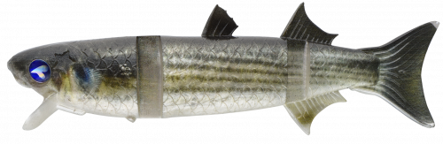
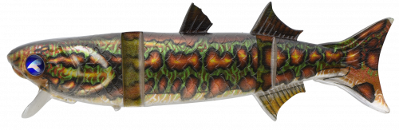
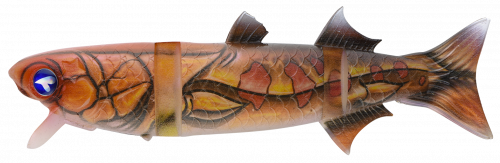
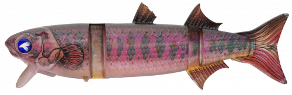
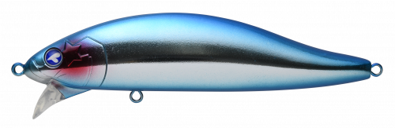
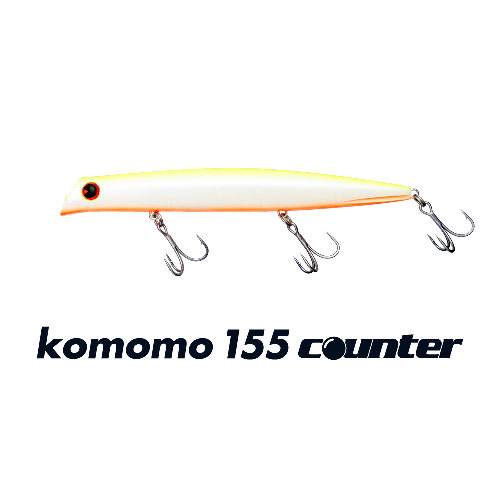

ボラコン150
（BORACON 150）
ボラコン150はBlueBlue（ブルーブルー）のジョイントスイムミノーです。
「これは！まさにボラである！」というキャッチコピーどおり、水面を揺らしながら泳ぐ様子はボラそのもの。ワーム素材を採用し、ハードプラグでは出せない波動で魚のスイッチを入れます。トレブルフック2個で掛かりがよく、連結ワイヤーで大物も確実に獲れます。

画像出典:BlueBlue公式HP
スペック
- メーカー
- BlueBlue（ブルーブルー）
- タイプ
- ジョイントスイムミノー（ワーム素材）
- 全長
- 150mm
- 自重
- 48g
- フック
- #2×2
- リング
- #4
- ターゲット
- シーバス・青物
- 価格
- 2,800円（税別）
▼今すぐチェック
ボラコン150の特徴
ワーム素材のジョイントボディで、水面をボラそっくりに泳ぐ
-
ワーム素材の生々しい波動
ワーム素材を採用し、ハードプラグでは出せない波動で泳ぎます。スレた大物にも口を使わせる、生々しいアクションが持ち味です。
-
トレブル2個と連結ワイヤー
トレブルフックを2個搭載してフッキング率が高く、連結ワイヤーで大物が掛かっても確実に獲れます。
-
上下2つのアイで使い分け
足場の高さや狙いたいレンジに合わせて、上下2つのアイを使い分けられます。下のアイを使うとポッピング機能もあり、水面で遊べます。
ボラコン150の使い方
基本はスローのただ巻き。水面を揺らしながら、ボラが泳ぐようにゆっくり引いてきます。
足場が高い場所や少し沈めたいときは上のアイ、水面でポッピングさせたいときは下のアイと、状況に合わせて結び変えましょう。
ボラコン150の得意な状況
ボラやコノシロなど大型ベイトが入っている河川・河口・港湾。ボラが水面を泳いでいるような状況で、大型のシーバスを狙いたいときに向いています。
ワンポイント
ボラが入っているときに、表層を強い波動で探るゼッパー140Fと、ナチュラルに見せるボラコン150を組み合わせるとローテーションが組みやすくなります。
BlueBlueの大型ベイト向けルアーの使い分け
| モデル | 全長／自重 | 得意な場面 |
|---|---|---|
| ボラコン150 | 150mm／48g | ワーム素材のジョイントで、ボラそっくりに泳がせたいときに（本記事のモデル） |
| ゼッパー140F | 140mm／36g | 激しいワイドアクションのビッグミノー |
| フォースガイル160F | 160mm／50g | 幅の広いS字で強く寄せるペンシル |
どれも大型ベイトパターン向けのルアー。ボラコンには浮力の違うボラコン150HFもあります。
人気カラー
公式ラインナップから4色を紹介します（カラー名は公式の表記のまま）。

#02 ボラボラそのもののナチュラルカラー。ボラパターンの基準に。

#06 アマゾンボラアマゾン風のボラカラー。ナチュラル系に変化をつけたいときに。

#07 オレンジボーラオレンジ系のボラカラー。濁りや曇りの日にアピールしたいときに。

#11 ピーブラ個性的なカラー。定番色に反応がないときのローテーションに。
画像出典:BlueBlue公式HP
ボラコン150に似ているルアー
-

ゼッパー140F ブルーブルー 詳細はこちら＞全長140mm・自重36gのビッグミノー。同じBlueBlueで、強い波動とフラッシングで探りたいときに。
-
 カゲロウ155F
メガバス
詳細はこちら＞
カゲロウ155F
メガバス
詳細はこちら＞
全長155mm・自重39gのシャローランナー。大型ベイトパターンで、もっと遠くまで飛ばしたいときに。
-

コモモ155カウンター ima 詳細はこちら＞全長155mm・自重29gのフローティングミノー。アクションを抑えて、流れの中で弱ったベイトを演出したいときに。